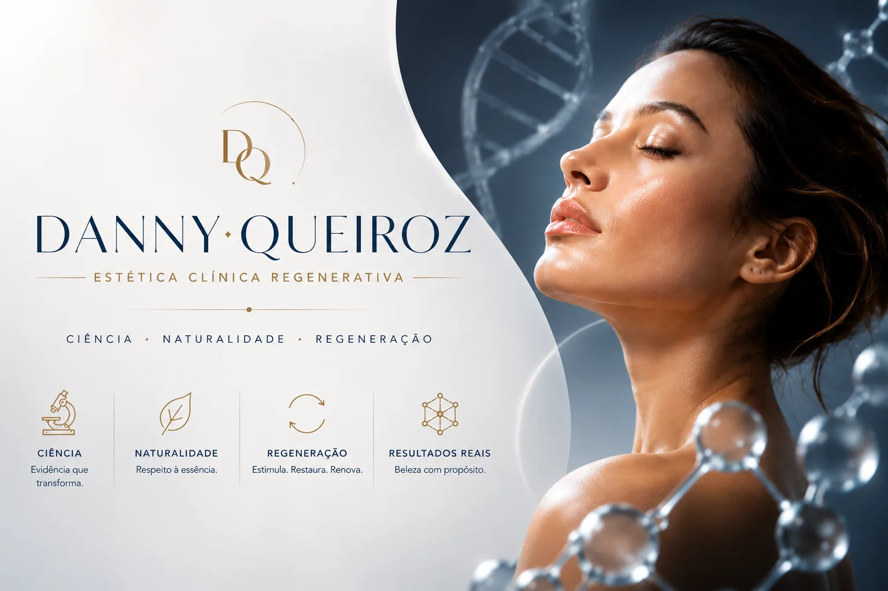
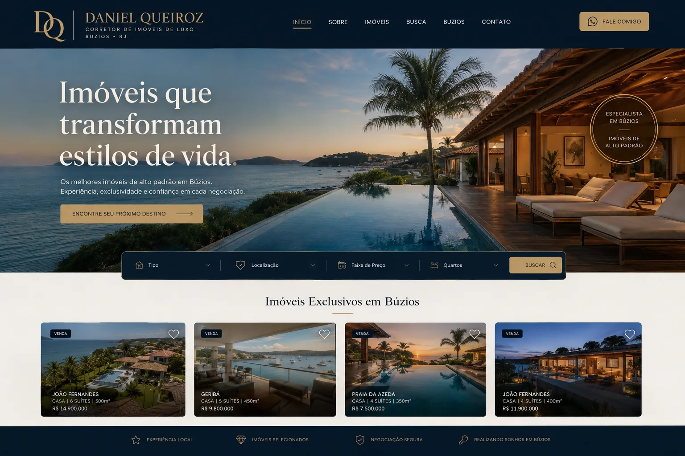

BRANDING · WEBSITE · AUTOMAÇÃO
Fazendinha Turca
Venda de produtos naturais — reposicionamento de marca, site estratégico e automação de atendimento via WhatsApp.
Ver case →RESULTADOS REAIS
Marcas que transformaram presença digital em resultado, com estratégia, tecnologia e branding trabalhando juntos.
CASES DE SUCESSO
Venda de produtos naturais — reposicionamento de marca, site estratégico e automação de atendimento via WhatsApp.
Ver case →
Especialista em estética regenerativa — reposicionamento de marca e novo site estratégico para autoridade e conversão.
Ver case →
Consultoria de imóveis de alto padrão — site estratégico e reposicionamento de branding para um público mais qualificado.
Ver case →DEPOIMENTOS
A YANSIX entendeu exatamente o momento do meu negócio e entregou um site que realmente converte. O atendimento automatizado mudou nossa rotina.
Antes eu não aparecia nas buscas do Google para palavras-chave relacionadas aos tratamentos que ofereço. Hoje estou posicionada entre os principais resultados nas cidades onde atuo, como Cabo Frio, Araruama e Copacabana.
O novo site elevou o padrão da minha comunicação com clientes de alto padrão. O processo foi estratégico do início ao fim.